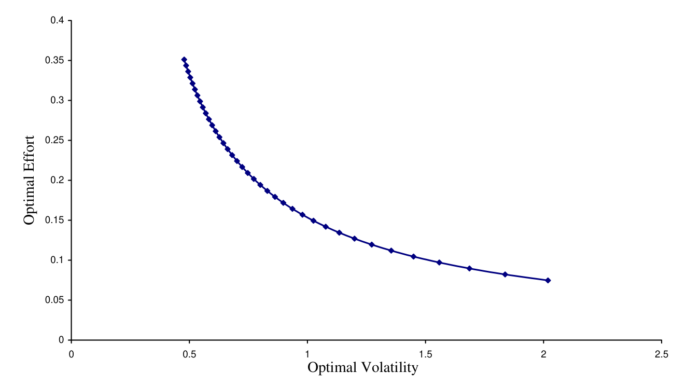
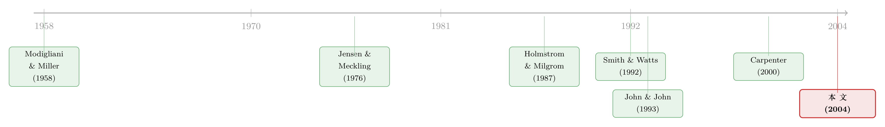

给「好经理」配高杠杆：一道把努力、风险与债同时定下来的方程
本文读的是 Cadenillas, Cvitanić & Zapatero (2004, JFE)：在一个连续时间的委托—代理模型里，风险中性的股东同时决定「发多少债」和「给经理多少（带杠杆的）股票」，而风险厌恶的经理则相机选择努力与波动。模型的核心结论出人意料地干净——应该把高杠杆的股票发给「好经理」、把低杠杆的发给「坏经理」；高动量、大公司、以及「多冒一点险也换不来多少超额收益」的公司，都更适合高杠杆。
1 一个被传统智慧判了死刑的做法
先说一件「常识」。
自 Jensen 和 Meckling (1976) 以来，金融学院里教的第一课之一就是：给持股的经理叠加杠杆，是危险的。道理朴素得近乎直觉——带杠杆的股票，本质上是一份看涨期权 \((V-B)^+\)；而期权的价值随波动率上升而上升。于是一个持有「期权」的经理，会有强烈的动机去赌：挑那些风险更大的项目，把波动率拉高。赌赢了，超额收益归股东和自己；赌输了，损失由债主兜底。这就是著名的资产替代 (asset substitution) 问题。（关于这套逻辑五十年后的再审视，可参见《债务这副药，为什么不能全吃？》。）
顺着这条逻辑，结论几乎是宿命论的：杠杆越高，经理越想冒险，治理就越糟。John 和 John (1993) 把这件事做实了——他们证明，一个风险中性的经理一旦拿到带杠杆的股票，就会去挑更冒险的项目。
可如果事情真这么简单，我们就该看到一个奇怪的世界：聪明的股东应该尽量少发债、尽量给经理「干净」的无杠杆股票。但现实里，高杠杆的公司比比皆是，而且不少公司是主动把带杠杆的股权塞给高管的。
于是一个自然的问题是：会不会，杠杆从来就不是一个被动的「副作用」，而是股东手里一个主动调节激励的旋钮？ 这篇论文要讲的，正是这个反转。
2 把舞台重新搭一遍
要让「杠杆是激励工具」这件事成立，作者动了两处关键的设定。
第一，经理是风险厌恶的，而且带杠杆的股票是他唯一的报酬。 这一条至关重要。在 John & John 里经理风险中性，所以期权的凸性会单调地诱惑他冒险；而一旦经理风险厌恶、又把全部身家压在这只「期权」上，他就不再是单纯的赌徒了——他既怕公司跌破债务线 \(B\) 让自己血本无归，又想靠努力把价值顶上去。冒险与勤勉之间，出现了一个真正的权衡。
第二，这是一个动态 (dynamic) 模型。 经理不是在期初一次性押下努力和波动，而是逐时根据公司当前价值 \(V_t\) 相对债务线 \(B\) 的位置，相机调整。作者反复强调：本文的经济结论「本质上是动态的」，在等价的静态设定里根本得不到。这一点我们后面会回到。
舞台上有两个玩家。
经理：风险厌恶（对数效用），同时选择两样东西——努力 \(u\) 和波动 \(v\)。努力是有成本的（二次成本，相当于多花时间、多熬夜），波动则不花力气（它只是「挑项目」：从一份风险各异、但风险越高预期回报也越高的项目菜单里选一个）。
股东（外部投资者）：风险中性，握有两项决策权——发多少债（债务面值 \(B\)，\(B=0\) 即无杠杆）、以及把多少股 \(n\) 的（带杠杆）股票发给经理。他们的目标是最大化公司终值净掉报酬包的价值。两项决策彼此缠绕：发债改变了经理手里那份期权的形状，从而改变他的努力与冒险动机。
公司价值的演化，把这一切装进了同一道随机微分方程 (stochastic differential equation, SDE)：
论文里把经理类型这个参数写作小写 d（与微分符号 \(dt\) 同形，容易看花眼）。下文我一律改写成 \(\delta\)，含义不变：\(\delta\) 越大，经理越「能干」——同样一份努力，能把公司价值顶得更高。参数 \(a\) 则是「项目菜单」的斜率，它高，意味着公司只要稍微多冒点险，预期回报就猛涨（典型是成长型、新公司）。
到期时，股票是公司价值减去债务后的剩余索取权，一份不折不扣的看涨期权：
$$ S = (V_T - B)^+ . $$
经理的目标函数（对数效用减去努力成本）是：
$$ \max_{u,v}\; \mathbb{E}\!\left[\, \log\big\{ n (V_T - B)^+ \big\} - \frac{1}{2}\int_0^T u_t^2\, dt \,\right]. $$
这里藏着一个漂亮的小机关：因为是对数效用，股数 \(n\) 在激励上完全不起作用（\(\log(n\cdot x) = \log n + \log x\)，\(\log n\) 是常数，对最优化 \(u,v\) 无影响）。\(n\) 只决定经理拿多少、能不能满足他的参与约束，却不改变他怎么干活。于是激励的全部重担，压在了杠杆 \(B\) 身上。
股东那一侧，目标是
$$ \max_{(B,n)}\; h(B,n) = \lambda\, \mathbb{E}[V_T] - n\, \mathbb{E}[(V_T - B)^+], $$
其中 \(\lambda\) 衡量「公司价值」相对「报酬成本」在股东心里的分量；约束是经理通过最优努力与波动所能达到的效用不低于保留效用 \(R\)（参与约束，principal-agent 文献的标配）。
3 把「天书」一样的最优解，解到只剩两条公式
这类连续时间委托代理问题，难就难在经理可以相机地、在每个时点根据 \(V_t\) 调整 \(u,v\)——要在所有可能的路径上做最优化。作者用的是资产定价里成熟的鞅方法 (martingale / duality approach)（思路上承 Cox & Huang, 1989 和 Karatzas-Lehoczky-Shreve, 1987）。这里我把关键几步的直觉讲清楚，细节的证明留在论文附录。
第一步，市场被「波动选择」补全了。 注意 \(v\) 是经理自由、且无成本地选的，而且可以取到任意大。这等于说，经理能通过挑项目，把公司价值的终端分布「捏」成几乎任何形状——这正是一个完全市场里的投资人能做的事。于是经理的问题，从「控制一个过程」变成了「直接挑一个最优的终端财富」。
第二步，找到这个市场的定价核。 参数 \(a\)（多冒一单位险换多少超额收益）扮演的，恰恰是「风险的市场价格」的角色。对应的状态价格密度（一个指数鞅）是
$$ Z_t = \exp\!\Big( -\tfrac{1}{2} a^2 t - a W_t \Big). $$
第三步，对数效用给出最干净的解。 对数投资者的最优终端财富，永远与状态价格密度成反比。代回去，经理最优选择下的公司价值过程为（论文式 14）：
$$ V_t = \frac{e^{mt}}{z^\& Z_t} + B\, e^{-m(T-t)} - z^\& \delta^2 e^{mt} Z_t\, \bar T_t, $$
其中 \(z^\&\) 是参与约束对应的拉格朗日乘子（由一个二次方程 (10) 解出的正根），\(\bar T_t\) 是一个只依赖时间的确定性函数。
第四步，读出两条「行为公式」。 由上式可得最优努力（式 12）与最优波动（式 13）：
$$ u^\#_t = \delta\, z^\& e^{-mt} Z_t, $$
$$ v^\#_t V_t = \frac{a\, e^{mt}}{z^\& Z_t} + a\, z^\& \delta^2 e^{mt} Z_t\, \bar T_t . $$
这两条式子，是全文的「发动机」。还有一个让人安心的副产品：把 \(t=T\) 代入式 (14)，由于 \(\bar T_T = 0\)，得到
$$ V_T - B = \frac{e^{mT}}{z^\& Z_T} > 0 \quad (\text{a.s.}), $$
也就是说——只要 \(\delta>0\)，经理总会施加足够的努力，保证公司到期不破产。这与「持期权就乱赌、把债主坑到违约」的资产替代叙事，恰好相反。原因正是那个被改掉的设定：风险厌恶 + 唯一报酬。经理太怕跌破 \(B\) 了，因为那意味着他自己的效用是负无穷。
4 把公式翻译成话：杠杆到底在激励什么
光有公式不够，论文真正的贡献在于把它们「翻译」成可读的经济学。作者用一组数值表把比较静态讲透了（\(V_0=100\)）。
先看努力。 第一个、也是最反直觉的结果：最优努力 \(u^\#\) 随杠杆 \(B\) 上升。在 \(T=1,\,a=0.03,\,m=0.04,\,\delta=5\) 这一行，债务面值从 \(B=30\) 提到 \(B=80\)，初始努力从 0.0672 跳到 0.1991——几乎是三倍。
为什么？作者讲得很清楚：这不是 Jensen-Meckling 的资产替代。这里经理风险厌恶，带杠杆的股票是他唯一的财富与效用来源。杠杆越高，努力对报酬价值的影响就越大（同样一笔钱，他拿到的是更多份带杠杆公司的股票），于是努力的边际产出更高，经理就更卖力。这与 Hall & Murphy (2000, 2002) 关于「行权价越高、期权激励越强」的发现一脉相承——带杠杆的股票，本就是一份行权价为 \(B\) 的期权。
接着，其余几个比较静态都顺理成章：
- 时间越长，努力越低。\(T=1\) 时 \(u^\#=0.0672\)，\(T=5\) 时降到
0.0533。更长的期限，对经理的作用类似更低的杠杆。 - 动量 \(m\) 越高，努力越低。顺风时不用那么使劲。
- 项目菜单越好（\(a\) 越高），努力越低。能靠挑项目赚的，就不必靠流汗赚。
- 类型 \(\delta\) 的效应取决于 \(V_t\) 与 \(B\) 的相对位置：当 \(V_t>B\)，努力随 \(\delta\) 上升；\(V_t
再看波动。 关键的一句：波动 \(v^\#V\) 与杠杆 \(B\) 的关系不是单调的。当 \(B\in[0,V_0]\) 时，波动随 \(B\) 递减；当 \(B>V_0\) 时，才转为递增。在 \(T=1,\,m=0.04,\,\delta=5\) 这行，\(B=30\) 时 \(v^\#V=2.155\)，\(B=80\) 时降到 0.754。直觉是：当公司价值仍高于债务面值，经理更怕把好端端的「内在价值」赌没了，于是债越多反而越收着点；只有当债务高到公司价值之下、那份期权已近乎一文不值时，经理才被迫靠拉高波动去搏一个翻身的机会。而 \(a\) 的效应是单调的——菜单斜率越高，波动选得越高（\(a=0.03\to2.155\)，\(a=0.05\to3.592\)）。
努力与波动之间，于是浮现出一条此消彼长的边界。这正是论文图 1 描绘的东西。

Figure 1: In this graph we represent the trade-off between optimal effort and optimal volatility for the
5 反转：最优杠杆该发给谁
把上面这些拼起来，论文的核心结论就水落石出了。股东在选 \(B\) 和 \(n\) 时，是在用杠杆这把「刀」去雕刻经理的努力与冒险。最优的雕法是：
第一，把高杠杆的股票发给「好经理」（高 \(\delta\)），把低杠杆的发给「坏经理」。 因为高 \(\delta\) 的经理努力的边际产出高，用杠杆放大他的努力激励最划算；对低能的经理加杠杆，只会逼他去冒险而非流汗。
第二，高动量 \(m\) 等价于高类型——也该配高杠杆。 顺风的公司，杠杆能更高效地转化为价值。
第三，「多冒险也换不来多少超额收益」的公司（低 \(a\)）适合高杠杆；反之，\(a\) 高的成长型公司应当低杠杆。 这一条，恰好和 Smith & Watts (1992) 的经典实证对上了——他们发现，成长机会好的公司，杠杆反而更低。论文模型给这个相关性提供了一个激励层面的微观解释。
第四，小公司的最优杠杆低于大公司。
这一整套结论里，最该被记住的一点是：杠杆在这里是「因」不是「果」，是股东主动设计的激励变量。而它之所以能起作用，全靠那个动态设定——经理逐时根据 \(V_t\) 与 \(B\) 的距离调整努力，杠杆才得以「咬」住他的行为。作者明确指出：在静态设定里，这些结论统统消失。（关于「杠杆究竟是因还是果」的另一种、无摩擦的讲法，可对照《杠杆是「果」，不是「因」》。）
6 文献脉络
把这篇论文放回它生长的那条线上看，会更清楚它补在了哪一格。
源头自然是 Modigliani & Miller (1958)：投资政策给定、无税无摩擦时，资本结构与公司价值无关。此后整条文献都在「松绑」这些假设——Modigliani & Miller (1963) 加进税盾，Kraus & Litzenberger (1973) 加进破产成本，而真正把「人」请进来的，是 Jensen & Meckling (1976)：代理成本、以及那个挥之不去的资产替代幽灵。
接着，一支文献专门研究「带杠杆的股权如何扭曲冒险动机」。John & John (1993) 在风险中性的框架下，得出「levered stock → 更冒险」的悲观结论。本文正是站在这里做的反转：把经理换成风险厌恶、把报酬限定为唯一的带杠杆股票，结论就翻了过来。
另一支，是把期权定价的结构化视角搬进公司金融——Black & Scholes (1973)、Merton (1974) 让人们学会把股权看成对资产的看涨期权；Hall & Murphy (2000, 2002) 则把「最优行权价」做成了一个激励设计问题，与本文的「最优杠杆」如出一辙。
技术上，这篇论文属于方兴未艾的动态委托代理文献，从 Holmstrom & Milgrom (1987) 起步，经 Carpenter (2000)（同样动态、但只让经理选波动、设 \(\delta=0\)）等推进。而在「股东同时决定融资与薪酬」这一前提上，它接续了 Stulz (1990)。最后，它与同期的 Smith & Watts (1992)（成长机会与低杠杆的实证）相互印证，与 Lewellen (2002)（经理风险厌恶与融资决策）、Morellec (2004)（管理层裁量解释偏低杠杆）彼此呼应。

7 评论与延伸（Q&A + 研究方向）
(a) 几个可能的疑问
Q：这和 Jensen-Meckling 的资产替代到底差在哪？
差在经理的偏好和报酬结构。J-M 与 John & John (1993) 里经理风险中性，期权的凸性单调地诱惑他冒险；本文经理风险厌恶、且带杠杆股票是唯一财富，于是他既怕跌破 \(B\) 又想靠努力顶上去。结果是 \(\delta>0\) 时破产永不发生——经理主动施加足够努力保证 \(V_T>B\)。资产替代的方向被偏好彻底掰回来了。
Q：为什么非得是「动态」？静态版本不行吗？
论文反复强调，核心结论「本质上是动态的」。在静态设定里，经理期初一次性押定 \(u,v\)，杠杆无法「逐时咬住」他的行为，那些比较静态（尤其是努力随杠杆上升、波动与杠杆的非单调关系）就得不到。动态性是这篇文章的命根子。
Q：给「好经理」加高杠杆，难道不怕他冒险坑了债主？
不怕——这正是反直觉之处。模型里 \(\delta>0\) 时，经理为避免负无穷效用，会把价值顶到债务线之上，违约概率为零。债务在这里不是被掏空的对象，而是放大努力激励的杠杆。当然，这依赖「破产即经理效用负无穷」这个偏好假设。
Q：对数效用是不是太特殊了？股数 \(n\) 为何与激励无关？
对数效用让 \(\log(n x)=\log n+\log x\)，\(n\) 退化成常数，不影响 \(u,v\) 的最优化——所以激励全压在杠杆 \(B\) 上，\(n\) 只管「拿多少」和参与约束。作者说明任何 CRRA 类效用都能给出定性相同的结论，对数只是为了闭式解的方便。
Q：波动与杠杆为什么是「先降后升」的非单调关系？
当 \(B\in[0,V_0]\)，公司价值高于债务面值，经理珍惜既有的内在价值，债越多越收着波动；当 \(B>V_0\)，那份期权已近乎归零，经理才被迫拉高波动去搏翻身。拐点恰在 \(V_t=B\)，根源还是对数效用对「跌破债务线」的极度厌恶。
Q：这套结论能拿数据检验吗？
一半能、一半难。「好/坏经理」（\(\delta\)）本身难以观测，所以「高 \(\delta\) 配高杠杆」几乎无法直接测。但「\(a\) 高（成长机会好）→ 低杠杆」这一条，与 Smith & Watts (1992) 的实证相符；而 Bertrand & Schoar (2003) 关于「经理个人特征解释融资决策」的发现，也为本文前提提供了间接支持。
(b) 几个可能的研究问题与提案
1. 把破产成本与回收率放回模型。 【经济故事】论文脚注 1 坦承：一旦假设破产时股东仍有正回收（违反绝对优先），经理可能主动让公司违约，式 (5)(6) 都要改写，且没有闭式解。这恰恰是公司债定价最关心的地方——债主的回收率会反过来改变经理的努力与冒险。 【可行性】中。需要数值解（HJB/有限差分）替代闭式解，技术上 doable，但要小心多重均衡；纯理论扩展，不依赖外部数据。
2. 高管激励的「凸性」与公司债利差。 【经济故事】模型说经理 type 通过努力把 \(V_T\) 顶到 \(B\) 之上、压低违约。若如此，高管手里那份「带杠杆股票」的 delta/vega 就应当负向预测公司债利差——激励越强、债越安全。 【可行性】中。数据可得：ExecuComp 的期权 delta/vega + TRACE 的公司债利差 + Compustat 控制变量。识别难点在内生性（薪酬与杠杆同时被董事会选定），需找薪酬结构的外生冲击（如税法变化、归属期改革）。
3. 波动选择 \(v\) 与债券二级市场流动性。 【经济故事】本文的 \(v\) 是「项目风险」，但若把它读作资产端波动，它应通过期权价值传导到债券价格的不确定性，进而影响做市商的报价与流动性。高管激励 → 资产波动 → 债券流动性，是一条尚未被打通的链。 【可行性】中偏低。需要把经理波动选择映射到可观测的资产波动代理（如隐含波动、资产波动估计），再接到债券买卖价差，链条较长。
4. 用现代数据复检「成长机会—低杠杆」的激励解释。 【经济故事】Smith & Watts (1992) 的相关性人尽皆知，但本文给了它一个激励机制（高 \(a\) → 低杠杆最优）。若机制为真，则该相关性应在「高管激励更强」的子样本里更陡。 【可行性】高。Compustat + ExecuComp 即可构造成长机会代理（市账比、研发）× 高管激励的交互项，做横截面/面板回归，是一个干净、低门槛的检验。
8 参考文献
我的总评：这篇论文最漂亮的地方，是用一个改了两处假设（经理风险厌恶 + 报酬限于带杠杆股票）的连续时间模型，把「带杠杆股权 = 鼓励冒险」这条流传已久的悲观结论，干净地翻转成「杠杆是股东主动调节努力的激励工具」，并自洽地推出「高杠杆配好经理 / 高动量 / 大公司 / 低成长机会」这一组可读的处方。鞅方法用得克制而到位，闭式解让比较静态一目了然。
但对它的「识别」（更确切地说，对它能不能落地）我有两点保留。其一，结论高度依赖那两处假设：现实中高管薪酬远不止「唯一的带杠杆股票」（有现金、有限制性股票、有奖金），一旦放开，作者自己也承认会冒出「无穷波动」这类不现实的角点解，是限制性设定挡住了它。其二，最核心的「好/坏经理配不同杠杆」几乎无法证伪——\(\delta\) 不可观测。真正可检验的，是 \(a\)（成长机会）那条腿，而它与 Smith-Watts 的吻合更像是「事后对得上」而非「事前预测」。
后续我最想看到的，是把破产成本与债主回收率放回去（哪怕只能数值求解），看「努力随杠杆上升」这条关系是否稳健——因为那才是公司债与信用市场真正会发生的故事。
- Black, F., Scholes, M. (1973). The pricing of options and corporate liabilities. Journal of Political Economy 81(3), 637–654.
- Bertrand, M., Schoar, A. (2003). Managing with style: The effect of managers on firm policies. Quarterly Journal of Economics 118(4), 1169–1208.
- Carpenter, J. (2000). Does option compensation increase managerial risk appetite? Journal of Finance 55(5), 2311–2331.
- Cox, J., Huang, C.-F. (1989). Optimal consumption and portfolio policies when asset prices follow a diffusion process. Journal of Economic Theory 49(1), 33–83.
- Hall, B., Murphy, K.J. (2000). Optimal exercise prices for executive stock options. American Economic Review 90(2), 209–214.
- Hall, B., Murphy, K.J. (2002). Stock options for undiversified executives. Journal of Accounting and Economics 33(1), 3–42.
- Holmstrom, B., Milgrom, P. (1987). Aggregation and linearity in the provision of intertemporal incentives. Econometrica 55(2), 303–328.
- Jensen, M., Meckling, W. (1976). Theory of the firm: Managerial behavior, agency costs and ownership structure. Journal of Financial Economics 3(4), 305–360.
- John, T., John, K. (1993). Top management compensation and capital structure. Journal of Finance 48(3), 949–974.
- Karatzas, I., Lehoczky, J., Shreve, S. (1987). Optimal portfolio and consumption decisions for a 'small investor' on a finite horizon. SIAM Journal of Control and Optimization 25(6), 1557–1586.
- Kraus, A., Litzenberger, R. (1973). A state-preference model of optimal financial leverage. Journal of Finance 28(4), 911–922.
- Lewellen, K. (2002). Financing decisions when managers are risk averse. Working paper, University of Rochester.
- Merton, R. (1974). On the pricing of corporate debt: The risk structure of interest rates. Journal of Finance 29(2), 449–470.
- Modigliani, F., Miller, M. (1958). The cost of capital, corporation finance, and the theory of investment. American Economic Review 48(3), 261–297.
- Modigliani, F., Miller, M. (1963). Corporation income taxes and the cost of capital: A correction. American Economic Review 53(3), 433–443.
- Morellec, E. (2004). Can managerial discretion explain observed leverage ratios? Review of Financial Studies 17(1), 257–294.
- Smith, C., Watts, R. (1992). The investment opportunity set, and corporate financing, dividend, and compensation policies. Journal of Financial Economics 32(3), 263–292.
- Stulz, R. (1990). Managerial discretion and optimal financing policies. Journal of Financial Economics 26(1), 3–27.